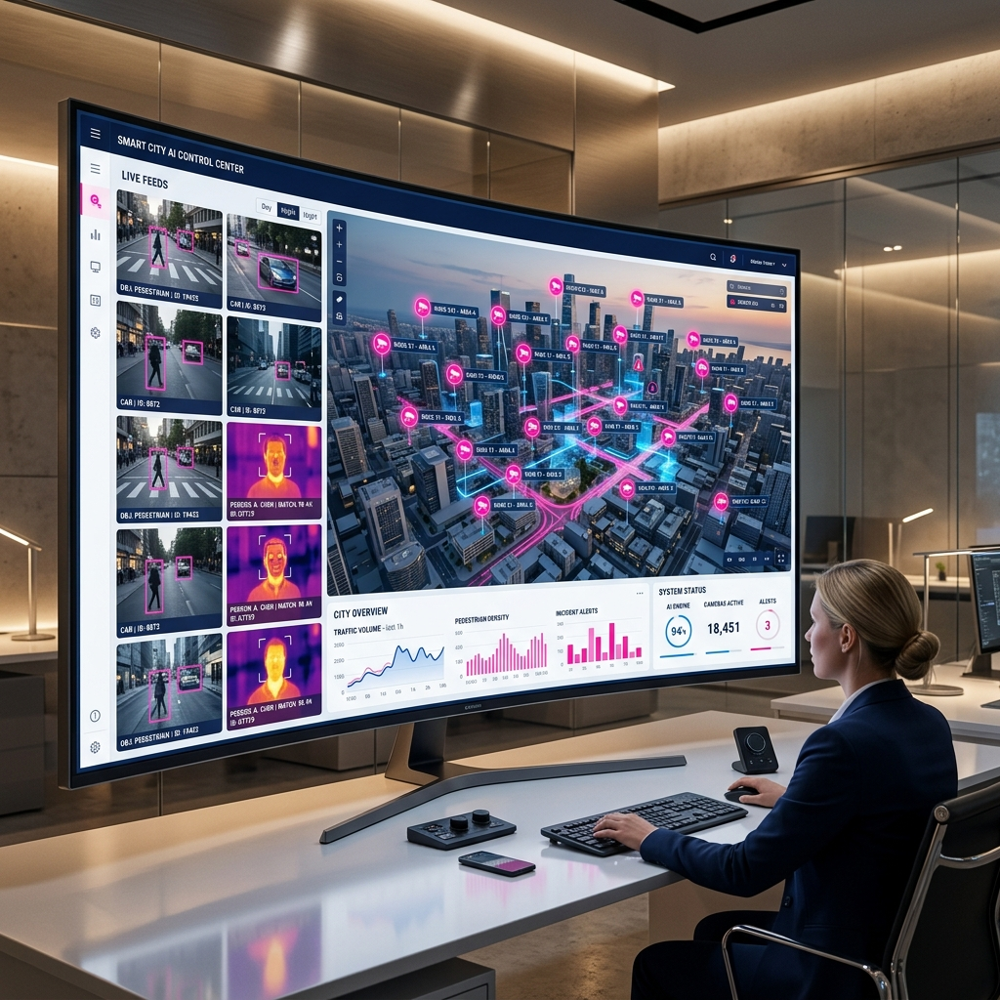

Cameras that
watch back.
Pakistan's cities run thousands of CCTV cameras 24/7 — but rely on human operators who can't catch everything. AMS Safe City plugs an AI layer directly into those existing cameras, detecting weapons, wanted faces, mob formations and perimeter breaches automatically, in real time, on local servers.

Watched, but not protected
Cameras record events — they don't prevent them. No human can monitor dozens of simultaneous feeds without fatigue. The result is a system that captures incidents but stops almost none of them.
Problem
Thousands of cameras across markets, roads and government buildings stream around the clock — but depend entirely on human operators watching screens. Crime and disorder continue to rise because nobody is watching intelligently in real time.
Solution
AMS Safe City connects to any existing IP camera network and runs a parallel suite of deep-learning models on every live stream — surfacing threats the instant they appear, on a single command dashboard, processed entirely on local servers.
Eleven modules. One intelligent network.
Each module is a dedicated AI capability running in parallel on the same camera feeds. Select any module for its full feature set and services.
Weapon Detection
Identifies firearms, knives, and dangerous objects in live feeds and triggers an instant alert for preventive intervention.
View module →Facial Recognition
Matches faces in live feeds against watchlists of wanted, missing, and unauthorised persons — with confidence scoring on every match.
View module →Expression Recognition
Analyses facial micro-expressions to detect distress, aggression, or fear — flagging potential victims or perpetrators early.
View module →Drowsiness Detection
Monitors operators and control-room staff for fatigue during long shifts — cutting the risk of human inattention at critical moments.
View module →Mob & Crowd Density Detection
Identifies abnormal crowd formations, density surges, and dispersal patterns that signal a developing public-order situation.
View module →Perimeter Breach Detection
Raises an instant, location-specific alert whenever someone crosses a designated restricted boundary or secure zone.
View module →Facemask & Social Distancing Monitoring
Enforces facemask and distancing compliance in controlled-access facilities and public venues during outbreak conditions.
View module →Camera Tamper Detection
Detects physical obstruction, rotation, or interference with any monitored camera and alerts operators instantly.
View module →Smart Parking Management
Automates bay occupancy tracking, flags parking violations, and keeps a timestamped log of all entry and exit events.
View module →Live Streaming & Command Dashboard
Aggregates every feed into one searchable, real-time interface with alert history, detection logs, map tracking, and response tools.
View module →Automatic Number Plate Recognition
Reads vehicle number plates in live feeds and matches them against watchlists for flagging and cross-camera vehicle tracking.
View module →Why AMS Safe City
Turns Cameras into Smart Security
Detects threats automatically — no manual monitoring needed. Your existing cameras become an intelligent security layer.
Instant Response to Incidents
Real-time alerts help you act immediately. Weapons, intrusions, crowd surges and more — flagged the instant they appear.
Reduces Human Effort & Errors
AI handles monitoring with high accuracy, 24/7. Operator fatigue, blind spots and missed events become a thing of the past.
Complete Visibility & Control
Manage all cameras and data from one unified command dashboard. One screen, every feed, every alert, every response.
Protects People & Property
Improves safety in any environment. Detects risks, threats, and violations early to prevent incidents before they escalate.
Indigenous & Data-Sovereign
Built and maintained in Pakistan. All AI processing runs on-premise — no footage or biometric data leaves the city's own network.
Built for every environment
AMS Safe City serves any organisation that needs intelligent surveillance and real-time threat detection.
Schools & Colleges
Student attendance tracking, campus safety monitoring, and real-time threat alerts for educational institutions.
Offices & Organizations
Employee tracking, workplace security, and access control for corporate and government offices.
Government & Safe City Projects
Public surveillance, crime control, and city-wide intelligent monitoring for law enforcement agencies.
Malls & Public Places
Crowd monitoring, threat detection, and shopper safety for commercial and public venues.
Industries & Factories
Workplace safety, access control, perimeter breach detection, and compliance monitoring for industrial sites.
Traffic & Transport
Vehicle tracking, ANPR, traffic flow analysis, and smart parking management for transport authorities.
From survey to scale
AMS Safe City is delivered as a complete service — not just software. ISD handles every stage of standing up an intelligent surveillance network.
Platform Deployment
End-to-end integration of the AMS AI layer onto a city's existing IP camera network — survey, install, configure and commission.
AI Model Training
Multi-environment data collection and model retraining tuned to each city's lighting, camera angles and crowd patterns.
Command Centre Setup
Design and stand-up of the on-premise command centre, dashboard configuration and operator onboarding.
Maintenance & Support
Ongoing model tuning, system health monitoring, camera-integrity oversight and technical support contracts.
Multi-City Scaling
Multi-tenant architecture, data isolation and alert routing for simultaneous operation across multiple cities.
Compliance & Certification
Government procurement certification, security audit and data-governance alignment (PECA 2016, data-protection).
Live since 2022
AMS Safe City is not a prototype. It is an operational product with a verified government deployment record — and the province is scaling fast.
- 2022Launched in Mardan, KPK as part of the Government of KP's Safe City Mardan Project.
- PartnersBuilt with the KP IT Board, District Police Office Mardan, and NCAI at UET Peshawar.
- 2026KP province-wide expansion underway: Peshawar (711 cameras), DI Khan, Bannu, Lakki Marwat.
- NextRollout to all KPK divisional headquarters planned for the second half of 2026.
Bring AMS Safe City to your city
Request a technical briefing or live demonstration of the AMS Safe City platform for your authority, facility, or deployment.